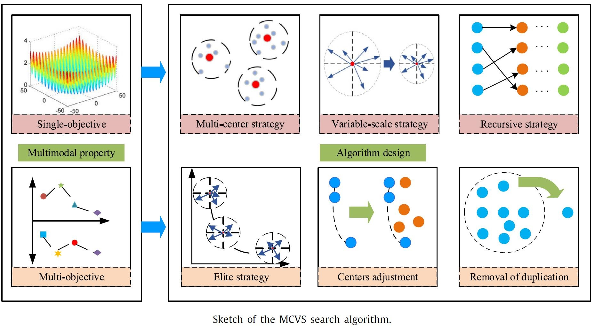

Benchmark Test Problems:
Dynamic Multimodal Optimization Benchmark Test Suite

The benchmark problems have played a fundamental role in verifying the algorithm’s search ability. A dynamic multimodal optimization (DMO) problem is defined as an optimization problem with multiple global optima and characteristics of global optima which are changed during the search process. Two cases are used to illustrate the application scenario of DMO. A set of benchmark functions on DMO, which contains eight problems, are proposed to show the difficulty of DMO. The properties of the proposed benchmark problems, such as the distribution of solutions, the scalability, the number of global/local optima, are discussed.
Cheng S, Lu H, Guo Y, et al. Dynamic Multimodal Optimization: A Preliminary Study[C]//2019 IEEE Congress on Evolutionary Computation (CEC). IEEE, 2019: 279-285.
Dynamic Multi-Objective Optimization Benchmark Test Suite

Dynamic multi-objective optimization (DMO) has recently attracted increasing interest. Suitable benchmark problems are crucial for evaluating the performance of DMO solvers. However, most of the existing DMO benchmarks mainly focus on Pareto-optimal solutions (PS)varying on the hyperplane, which may produce some unexpected bias for algorithmic analysis. Furthermore, they do not consider the time-linkage property, yet which is commonly observed in real-world applications. To alleviate these two issues, we designed a generalized test suite (GTS) for DMO with the following two advantages over previous existing benchmarks: 1) the PS can change on the hypersurface over time, to better compare the tracking ability of different DMO solvers; 2) the general time-linkage feature is included to systemically investigate the algorithmic robustness in the dynamic environment. Experimental results on five representative DMO algorithms demonstrated the proposed GTS can efficiently discriminate the performance of DMO algorithms and is more general than existing benchmarks.
Shao C, Zhao Q, Shi Y, et al. Generalized test suite for continuous dynamic multi-objective optimization[C]//International Conference on Evolutionary Multi-Criterion Optimization, 2021, in press.
Vehicle Routing Problems in Real-World Road Networks
We extract the road network in Nanshan district, southwest of Shenzhen, China from OpenStreetMap. The road network graph has 8214 nodes and 18558 road arcs. We generate 30 instances like the Solomon benchmark, which contains C1, C2, R1, R2, RC1, RC2, and all instances have 100 customers, respectively. Customers in “C” problems are clustered, and customers in “R” problems are random. In “RC” problems customers are partially clustered and partially randomly distributed.In problem sets 1 (i.e., R1, C1, and RC1), the scheduling horizon is short because of the low capacity of vehicles. In contrast, problem sets R2, C2 and RC2 have longer scheduling horizons.
Liu M, Shen Y, Zhao Q, et al. A Hybrid BSO-ACS Algorithm for Vehicle Routing Problem with Time Windows on Road Networks[C]//2020 IEEE Congress on Evolutionary Computation (CEC). IEEE, 2020.
Algorithms:
Novel Evolutionary Algorithm for Local Community Detection
Local community detection is a significant branch of the community detection problems. It aims at finding the local community to which a given starting node belongs. Local community detection plays an important role in analyzing complex networks and recently has drawn much attention from researchers. In the past few years, several local community detection algorithms have been proposed. However, previous methods only make use of the limited local information of networks but overlook the other valuable information. In this paper, we propose an evolutionary computation based algorithm called evolutionary based local community detection (ELCD) algorithm to detect local communities in complex networks by taking advantages of the whole obtained information. The performance of the proposed algorithm is evaluated on both synthetic and real-world benchmark networks. Experimental results show that the proposed algorithm has a superior performance compared with the state-of-the-art local community detection methods. Furthermore, we test the proposed algorithm on incomplete real-world networks to show its effectiveness on networks whose global information cannot be obtained.
Lyu C, Shi Y, Sun L. A Novel Local Community Detection Method Using Evolutionary Computation[J]. IEEE Transactions on Cybernetics, 2019, in press.
Evolutionary Algorithms for Dynamic Multimodal Optimization
Multimodal optimization problems hold many local optimal. A single heuristic search algorithm is difficult to reach all the optimal. To improve the search ability of evolutionary algorithms, we introduce a cooperative optimization strategy, in which differential evolution, univariate sampling, harmony search and particle swarm optimization are used to search the decision space. Experimental results show that, compared with the algorithms with a single search operator, the proposed cooperative optimization greatly improves the ability to solving multimodal optimization problems.
Further, we design a multicenter variable scale search algorithm to solve multi-mode combinatorial optimization problems in the network environment. The basic idea is shown in the figure below. The algorithm consists of two main parts. First, the multi-center strategy chooses several individuals with better performance as the only parents of the next generation, which means that there are a number of separate searching areas around the searching center. Second, the next generation of the population is produced by a variable-scale strategy with an exponential equation based on the searching center. The equation is designed to control the neighborhood scale, and adaptively realize the large-scale and small-scale searches at different search stages to balance the maintenance of diversity and convergence speed. In addition, an approach of adjusting centers is proposed concerning the number and distribution of centers for solving problems with multiple objectives.

We also consider the multimodal optimization problem in a dynamic environment and propose an adaptive multi-population brainstorming optimization algorithm. Firstly, the solution classification idea of the brainstorming optimization algorithm is used to divide the population into several sub-populations, which correspond to multiple local optimal multimodal problems. Then, a solution diversity measurement method is proposed to judge the solution diversity of each subpopulation. A restarting mechanism is introduced. Each sub-population will be restarted several times and iterated continuously to search for each local optimum. Finally, a dynamic variation amplitude estimation method is proposed, which generates initial solutions in the new environment according to the estimated variation amplitude to find and track multiple locally optimal solutions
Zhang G, Shi Y, Huang J S. Cooperative Optimization Algorithm for the 100-Digit Challenge[C]//2019 IEEE Congress on Evolutionary Computation (CEC). IEEE, 2019: 376-380.
Lu H, Zhou R, Cheng S, et al. Multi-Center Variable-Scale Search Algorithm for Combinatorial Optimization Problems with the Multimodal Property[J]. Applied Soft Computing, 2019, 84: 105726.
Pourpanah F, Wang R, Wang X, et al. mBSO: A Multi-Population Brain Storm Optimization for Multimodal Dynamic Optimization Problems[C]//2019 IEEE Symposium Series on Computational Intelligence (SSCI). IEEE, 2019: 673-679.
Applications
A Hybrid Swarm Intelligence Algorithm for Vehicle Routing Problem with Time Windows
The Vehicle Routing Problem with Time Windows (VRPTW) has drawn considerable attention in the last decades. The objective of VRPTW is to find the optimal set of routes for a fleet of vehicles in order to serve a given set of customers within capacity and time window constraints. As a combinatorial optimization problem, VRPTW is proved NP-hard and is best solved by heuristics. In this paper, a hybrid swarm intelligence algorithm by hybridizing Ant Colony System (ACS) and Brain Storm Optimization (BSO) algorithm is proposed, to solve VRPTW with the objective of minimizing the total distance. In the BSO procedure, both inter-route and intra-route improvement heuristics are introduced. Experiments are conducted on Solomon’s 56 instances with 100 customers benchmark, the results show that 42 out of 56 optimal solutions (18 best and 24 competitive solutions) are obtained, which illustrates the effectiveness of the proposed algorithm.
Shen Y, Liu M, Yang J, et al. A Hybrid Swarm Intelligence Algorithm for Vehicle Routing Problem With Time Windows[J]. IEEE Access, 2020, 8: 93882-93893.